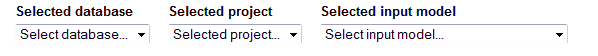
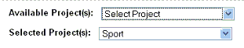

|
Creating a Record
|
Previous Top Next |
Signed-on users with the relevant rights can create a new record by clicking on the Create Record link. If a guest user attempts to create a record, the link will be disabled.
Creating a new, empty record
To create a new, empty record, click on the Create Record link.
Once you have clicked on the Create Record link, three drop-down lists will be displayed.

Using these drop-down lists, you can select the Termbase and projects to which the new record should belong, and specify the input model, which sets certain characteristics of the new record.
· Each record must be part of a Termbase and be assigned to at least one project.
· The input model defines the fields that will be available for the records and the rights you as user have for certain fields.
· If you are unsure which input model to use for the creation of a record, contact the Administrator.
Once the selections for the three drop-down lists have been made, a new, empty record will be generated for you.
Populating the new record
The first section of the empty record is the Project Selection panel:
· Here you can assign the record to more projects or remove assigned projects.
· By selecting a project from the drop-down list, it will be added to the list of projects assigned to the record.
· By double-clicking a project in the list of assigned projects, it will be removed from the list.

The input model with empty fields will be displayed below the Project Selection panel:
· Only the mandatory fields are displayed when creating a record. These must be completed and the record will not be saved until all the mandatory fields have been populated.
The Control Box is shown when creating or editing a record:
· From the Control Box, you can save the new record or use the Cancel button to return to the Termbrowser without saving the newly created record.
· If the Cancel button is selected, none of the information you have entered will be saved and the information will therefore NOT be available later.
· The Control Box can also be used to insert diacritic characters through the insert menu, which displays the languages with special characters and displays those characters once a language has been selected. Click on the character to insert it into the text box.